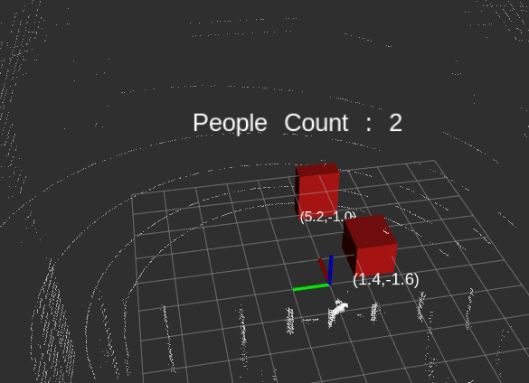

PCL 정리 노트
그동안 살펴 보았던 PCL 사용 및 활용에 대하여 정리 하고자 합니다.
PCL은 Point cloud Library의 약어로 Lidar나 RGB-D센서 등으로 수집되는 점군(Point cloud)를 처리 하기 위한 라이브러리 입니다.
Point cloud를 처리를 위한 라이브러리로는 PCL, PCL-python, Open3D, pyPCD, Laspy, PCLpy 등이 있습니다.
여기서는 PCL-Python과 일부 Open3D를 활용합니다.
Environment
- 언어: python2
- 라이브러리 : PCL-Python (PCL의 python버젼인)
- OS : Ubuntu 16.4 with ROS
- 센서 : Velodyne Puck (16ch Lidar)
PCL-To-All Docker : Ubuntu 16, ROS, PCL-python, Open3D, Jupyter, etc. 설치
Mini Project
진행은 Lidar로 수집되는 점군 데이터에서 사람을 추출 하는 3D People Detection 구현을 목표로 하고 있습니다.
|  |  |
|---|---|
| [초급] People Detection | [중급] People Detection and Tracking |
[초급] People Detection
- 대상 환경 : 사람외 사물이 없는 공간(eg. 로비)
- 주요 기술 : 필터링, 바닥제거, 노이즈제거, 클러스터링
[중급] People Detection and Tracking
- 대상 환경 : 사람과 사물이 공존하는 공간(eg. 사무실)
- 주요 기술 : 초급 기술 + 배경제거, 추적
[고급] People Detection and Tracking with Deeplearning
- End-to-End (딥러닝 으로 가능할까??)
Plan
| 초급 | 중급 | 고급 | |
|---|---|---|---|
| 2018.11.22 | 0.1 |
||
| 2018.11.22 | 0.2 환경구축 | ||
| 2018.11.23 | 1.1 Down Sampling | ||
| 2018.11.23 | 1.2 ROI Filtering | ||
| 2018.11.29 | 1.3 Noise Filtering | ||
| 2018.11.29 | 1.4 Plane Removal | ||
| 2018.11.30 | 1.5 Clustering | ||
| 2018.12.03 | 2.1 Background Removal | ||
| 2018.12.04 | 2.2 Clustering | ||
| 2018.12.05 | 2.3 Tracking | ||
| 2019.03.01 | 3.1 Clustering | ||
| 2019.04.01 | 3.2 Classification | ||
| 2019.05.01 | 3.3 Tracking |